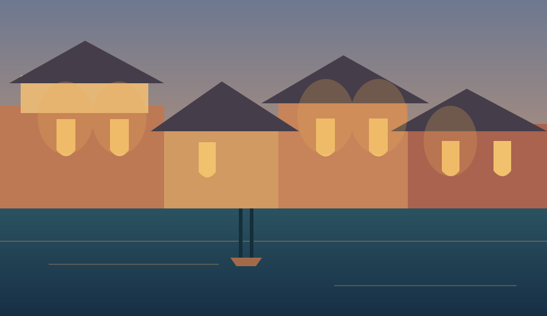

01THE NORTHEAST COAST
01THE NORTHEAST COASTHa Long Bay
Weekend Escape
Sail among ancient limestone peaks and wake to a softer kind of morning.
From $420 / guest↗
Quietly extraordinary places, local hosts and the little details that make a journey your own.
Discover the collection →THE NORTHEAST COAST01 / 03Chosen, never crowdedOnly places we'd send a friend.
Rooted in local knowledgeMeet the people behind the place.
Space for the unexpectedPlans that leave room to wander.
We believe the best journeys aren't measured in miles. They're found in a long lunch, a familiar face, and the feeling that you arrived at just the right moment.
A little more about us →Three distinct ways to find your own rhythm in Vietnam.
01THE NORTHEAST COASTSail among ancient limestone peaks and wake to a softer kind of morning.

02THE OLD TOWNA riverside hideaway and evenings that belong to the old town.
Clear water, long afternoons and nowhere else you need to be.
Our local partners know when the light falls across the bay, which lane smells of fresh coffee, and where the afternoon goes quiet. That's where we like to start.
Find your own somewhere →